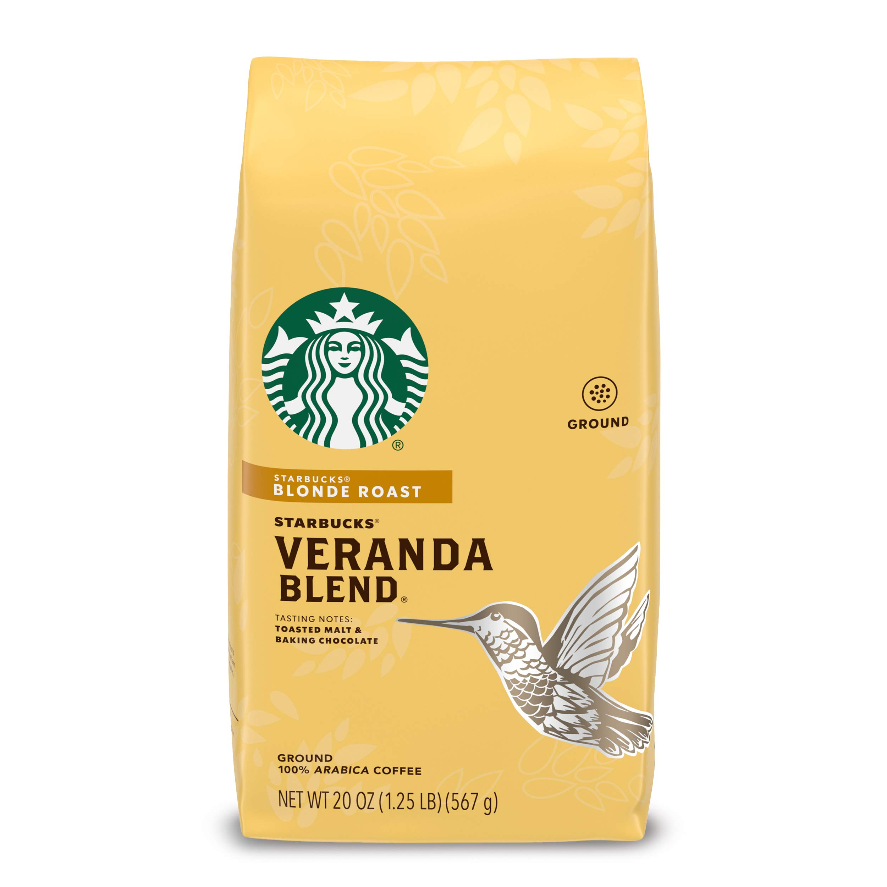
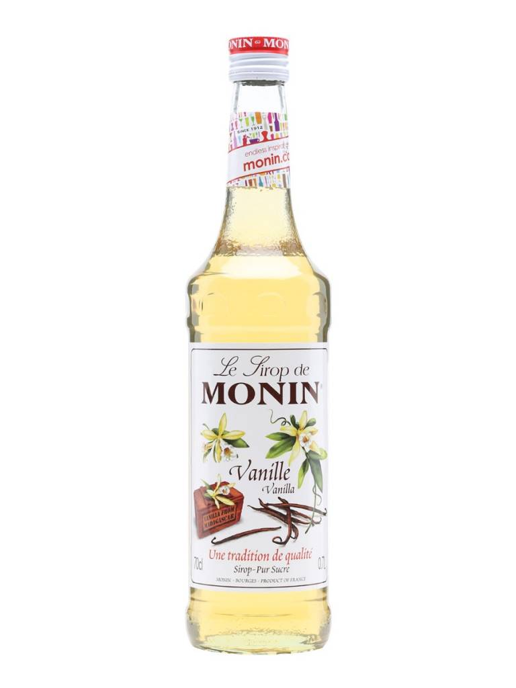

Recommendations from us!
Coffee Bean
If you're interested in building your own cafe at home, you most likely have tried out Starbucks before. If so, we recommend their veranda blend coffee grounds, which are used in some Starbucks drinks. Blonde roasts are toasted lighter in a shorter time which gives them a less intense taste. This specific product has hints of chocolate flavors, giving you a more familiar flavor without overpowering the aroma of the beans. If you'd like to start off with brewed coffee, we definitely recommend giving this a try to get yourself into the world of coffee.
Coffee Machine

The first step to making your home cafe - a coffee machine! Making coffee without a coffee machine will be very hard, which is why we recommend getting an espresso machine. Brewed coffee has its own charms… But with the number of types of drinks you can make with espresso shots, espresso machines are worth the investment: lattes, americano, macchiato, espresso con panna, cappuccino, and the list goes on. Espresso tablets also come in various flavors, so play around and have fun with it! Create your own coffee world ☕
Flavoring
For starters, vanilla is always a wonderful go-to syrup to add into your coffee. It's a very familiar flavor and a classic syrup, so it's always a great flavor to keep in your personal cafe. You also don't need to add it just coffee, you can add it to other drinks like tea lattes such as matcha lattes or chai lattes to make things a bit sweeter!
Milk Texture

Espresso drinks can get pretty strong for some people, which is perfectly fine when you are new to coffee. It can also get typical sometimes if you're always pulling the shots and filling up your cup with milk or water. When you feel that way, you can make a big change by getting yourself a milk frother. As the name suggests, it froths and foams up the milk, which works best with skim (nonfat) milk. It's like icing a cake with whipped cream but for coffee! Add a bit of flavored powder (e.g. vanilla, malt, cocoa, etc.), and now you have endless options for changing up your drink.